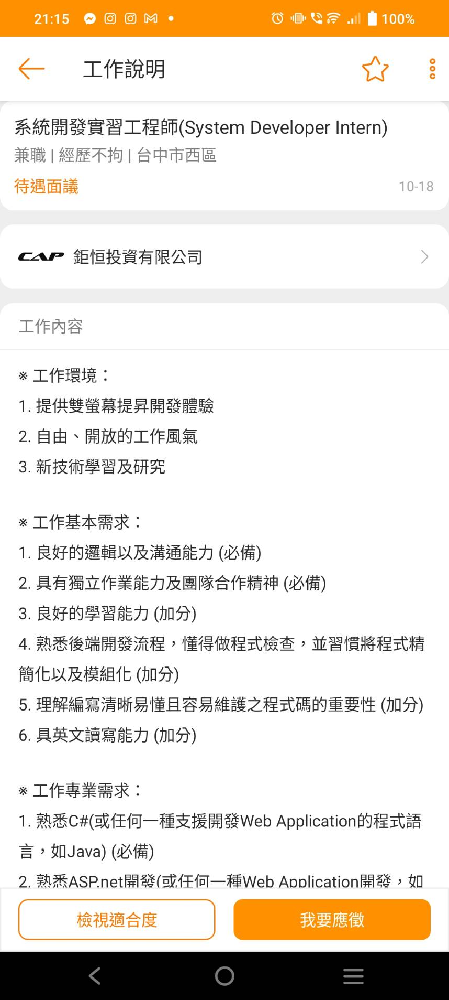
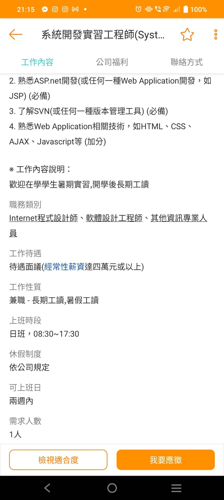
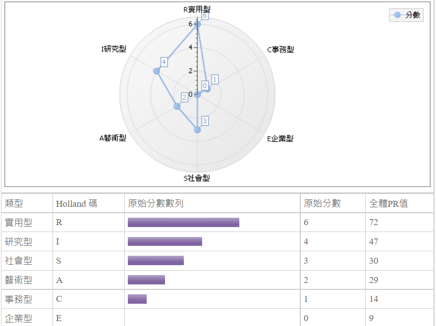

王畊弘的個人網頁資訊管理導論作業 |
|
簡介系級:資管二B學號:411030232E-mail:minceraft2730@gmail.com我來自基隆，今年19歲，就讀靜宜大學二年級，喜歡邊聽著音樂邊打節拍。 |
職業 我希望能夠從事與程式書寫有關的工作。 |
UCAN 我的職涯分析顯示出我的實用型為最高，其次為研究型，喜歡研究程式的感覺。 |
工作經歷1.伸鴻股份有限公司 || 理貨人員 || 工作時長一個月2.創聖號 || 快閃店內場人員 || 工作時長一個月 |